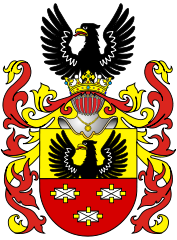
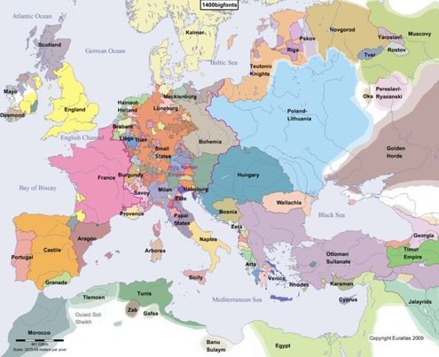
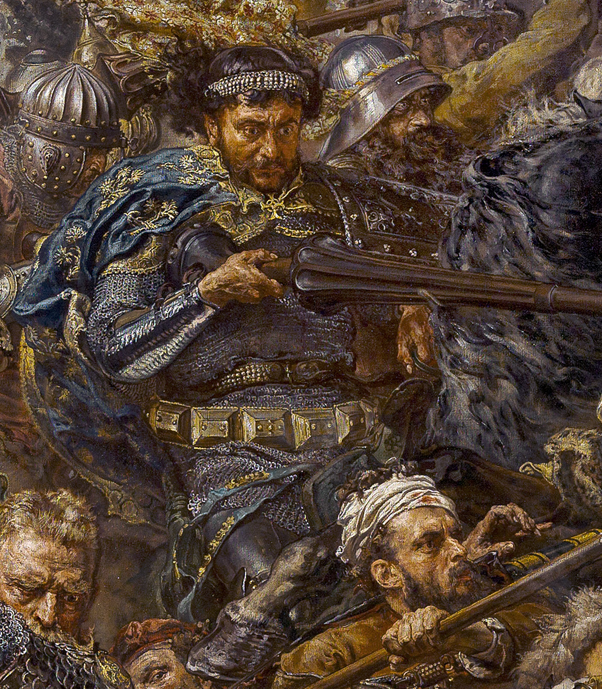

Zawisza the Black
from Garbów of Sulima arms


Biography
Family:
Zawisza was born in 1370 in Garbów as the son of the castellan kanoraski-sieradzki, Mikołaj from Garbów. His mother's name was Dorota. Zawisza's siblings were Jan called Firurej, the Spiš starosta and the Kraków stolnik, and Piotr Kruczek.
Politics:
Europe at the turn of the 14th and 15th centuries was in a state of geopolitical changes. The Renaissance broke out in Italy, the Spaniards discovered the New Lands, England and France recovered after the Hundred Years' War. Existing since 395, the Eastern Roman Empire (popularly known as the Byzantine Empire) was in decline due to attacks by Serbs and Turks. Jan Hus was active in Bohemia. Luxembourgers took over the throne of Hungary and Germany. At that time, Poland was going to recapture Pomerania from the Teutonic Knights, and for this Poland wanted alliance with pagan Lithuania, which these knights were invading. In Asia, the great leader Tamerlane wanted to rebuild Mongol Empire.
Youth:
Zawisza and his brothers spent their childhood like other noble children, i.e. on horseback, in the field, hunting, and exercising. Polish knighthood were not very educated at that time, but Zawisza received basic education and, for certain, could also read, write and knew Latin a little too. He also loved poetry. So Zawisza was an example of a western knight as in a poem, and it would probably be a proof that the western knightly culture also spreaded in our country. The age of Zawisza was probably similar to age of Queen Jadwiga and he was likely born in the early 1370s. Especially that the countrymen of Zawisza - Sandomierzans were a lot at Jadwiga's court. It can therefore be assumed that Zawisza appeared in Krakow just after 1390 to get into the court of the king, queen or other mighty Polish.
We do not know much about Zawisza's actions for a long time, but it is possible that Zawisza's first great success in the tournament, was somewhere in Poland, was in the anniversary tournament, which gave a great chance for fame. Zawisza's marriage was for sure, as most of the time, out of common sense, a Knight, whose only asset was a warrior, had to help himself with a large dowry. But the bishop of Kraków would not have allowed his niece to marry with just anyone, so Zawisza had to be a famous and wealthy knight at that time. The marriage had four sons - Marcin, Stanisław, Zawisza and Jan. Two of them died during the wars - Stanisław in the Battle of Varna in 1444 and Jan, who died in captivity, to which he was sent during the Battle of Chojnice in 1454.
Zawisza as a knight:
“Not only in the battle in which he was captured and killed, but in all expeditions he was a brave and brilliant knight, he was famous for his courage and great deeds in which no one equaled him. He was sweet and endearing in his speech, so that he captivated not only noble people, but also barbarians with his kindness. Above all, he had the rare quality that, as in battle, he displayed the boldest enthusiasm in the council, so that he showed the most moderate caution. Worthy for his heroic works not my weak praise, but Homer himself praise. "
From Jan Długosz's chronicle
Zawisza was a knight of two kings - Władysław Jagiełło and Zygmunt Luxemburg. Initially, he served at the Hungarian court, repeatedly participating in the royal expeditions against the Turks. Zawisza the Black was trained as a knight at the Zygmunt's of Luxemburg school. It is mentioned that he made a big progress in the knightly craft, which was noticed by Zygmunt and earned him recognition in his eyes. Zygmunt, under the influence of Zawisza's intercession, realesed a few imprisoned Poles. In 1403 he made Jan Rogal Rogalita free. He was imprisoned as an enemy of his homeland. In 1408 Zawisza the Black participated in the expedition of Zygmunt of Luxemburg, together with his brother Farurej, in a military expedition to Bosnia, which disobeyed Zygmunt. The expedition was a military success, many castles were captured, and Bosnia had to recognize the superiority of Zygmunt.
In 1409, he returned to Poland when he heard that he could finally deal with the Teutonic Knights. He also participated in the Battle of Grunwald, where, according to legends, he saved the royal banner at a critical moment. He fought under the banner of the Krakow region, commanded by Zyndran from Maszkowice. He was going in the front row of this banner and merited bravery during the battle. The brother of Zawisza from Garbów, Farurej, also took part in this battle, showing exceptional bravery. For his merits, which has been noted, Zawisza did not expect a reward from the Polish king, Władysław Jagiełło, unlike other knights. It is reported that he was rewarded by him only in 1420. Jan Matejko also didn't forget about it when he painted his famous painting "Battle of Grunwald".
Despite the lack of university education in diplomacy, the knight possessed all the qualities necessary for the diplomatic service. Participating in wars and tournaments, he traveled all over Europe, knew foreign languages and the customs of courts and etiquette. Fame and recognition allowed him to make new acquaintances, very important in diplomatic work. Zawisza was an MP for both Hungarians and Poles. Participated, inter alia, in the council of Konstanz in the years 1414-1418, interceding for the Czech reformer - Jan Hus. He also defended Władysław Jagiełło, called by Western kings "a pagan".
Zawisza was an outstanding duelist. One of his most famous duels has gone down in history - with the Spanish knight John of Aragon, which took place in Perpignano in 1415. Both knights stood side by side in the center of the courtyard and bowed to the rulers of France and Aragon (eastern Spain). King Ferdinand made a second sign with his hand. The clash for which the entire knightly Europe has been waiting for years was to begin in some seconds. Both opponents took their starting positions at opposite ends of the courtyard. The Aragonese went first. The Arab mare, stabbed by the spurs, moved forward. The opponent in the black armor put his hand on the head of his steed and spoke to it in an undertone. The stallion lunged like lightning. The Aragonese aimed at the top of the black knight's shield, decorated with an image of an eagle and three stones. He was counting on him to raise the shield and then the end of the lance would hit him in the stomach, knocking him off his horse. The knight, however, anticipated this maneuver and conquered the Aragonese copy upwards. In the second clash, the black knight struck a blow to the Spaniard's head and when he covered it with his shield, he hit its center with his full force. All viewers held their breath, not believing what they were seeing. Here the body of John of Aragonese flew from the saddle like a dry leaf caught in a gust of wind and hit the sand of the courtyard.

Relations between Poland and Hungary cooled down a bit. The Czech Republic, in which a revolt against Zygmunt broke out, was to be the next point of contention. In June 1421, Zawisza sent a deputy on behalf of Władysław Jagiełło to Zygmunt in order to test the possibility of renouncing the Czech crown, so that Jagiełło could take the Czech throne after resolving the religious issues related to the Hussites. At a later stage of this case, Zawisza was to send another letter to Zygmunt, this time because of Zygmunt's intention to incite the Teutonic Knights to attack Poland. At that moment, Zawisza stayed with Zygmunt and took part in the crusade he was preparing against the Czechs. He sent a letter to Prague before the attack of Zygmunt, but with no avail. Zygmunt's army was defeated in the Battle of Kutnohora, which took place in January 6, 1422. In escaping, Zygmunt left Zawisza in Deutschbrod as a commander. There he fought a battle with the overwhelming Czech forces. His forces lost in this battle and he was taken as a prisoner. He was released when Prince Witold sent Zygmunt Korybutowicz to Prague as governor. Zawisza returned to Poland probably in 1422.
Later, Władysław Jagiełło sent a mission to Zygmunt, headed by Archbishop Mikołaj Trąba, in order to avert the double danger threatening Poland from both Hungary and the Teutonic Knights. Zawisza was also in this group. It was, however, as it was to turn out, only a technical conference of both sides, which agreed on the possibility of organizing a congress with the participation of both kings. He also acted and later for a peaceful resolution of the dispute between Zygmunt and Władysław. Even later, Zawisza handed over to Zygmunt Władysław's invitation to the coronation ceremony of Queen Zofia Holszańska. On the occasion of this ceremony, he organized a feast, in which, apart from Zygmunt and Władysław, also Eryk, king of Denmark, who was invited to the coronation, and many clergy and nobles took part.
However, he had to return to the role of a mediator when the relations between Władysław and Zygmunt worsened again in the Czech context. Considering both countries as their homelands, Zawisza wanted to avoid a conflict between them, while ensuring that both rulers trusted him. Among other things, from his attitude came the saying "to rely as on Zawisza". Through Zawisza, Zygmunt invited Jagiełło in 1424 to the Reichstag in Vienna. However, it is known about situations in which the rulers themselves did not facilitate the brave knight's task. For example, when Zygmund had no excuses for Jagiełło, he blamed Zawisza for inappropriate provision of information. Interestingly, Zawisza was sometimes involved in correspondence with Prince Witold, for example in the context of the cast of the Poznań bishopric.
Death:
Zawisza cared about name of his arms and served as starosta of Kruszwica and later as starosta of Spiš. He wasn't described as high ranked official, even if he was an importatnt person.
In the last years of his life, he participated in the expeditions of Zygmunt of Luxemburg against the Ottoman Turks. In 1428, during the battle of Gołąbiec, the king fled to the other side of the Danube when he heard about the approaching Turkish reinforcements, leaving less forces. This team, where was Zawisza, was smashed, killed or captured. Before he was defeated, the ruler sent a boat for him, but the knight called it dishonorable and refused rescue. Later he was going to attack the Turks. But they, seeing his shiny armor with a black eagle, thought that he is a king or a prince and took him the captive instead of killing him. He probably died during the Janissaries quarrel in June 12, 1428. One of the soldiers decided to kill him while the others argued about who had captured him. The body of Zawisza the Black has never been found. The funeral took place in the Franciscan church in Krakow in November of the same year.

Poles blamed Zygmunt for Zawisza's death, so he sent a letter to Prince Witold, wanting to justify himself. He mentioned helping the Zawisza family in his letter.